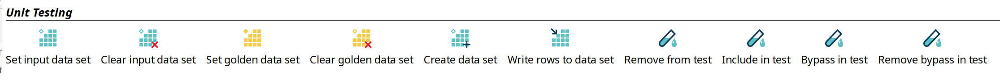
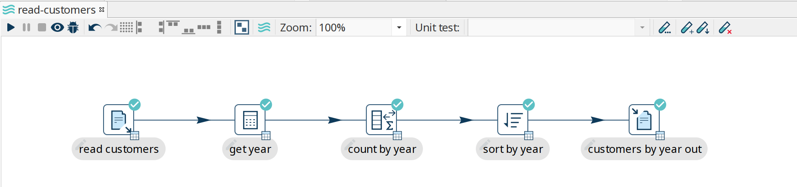
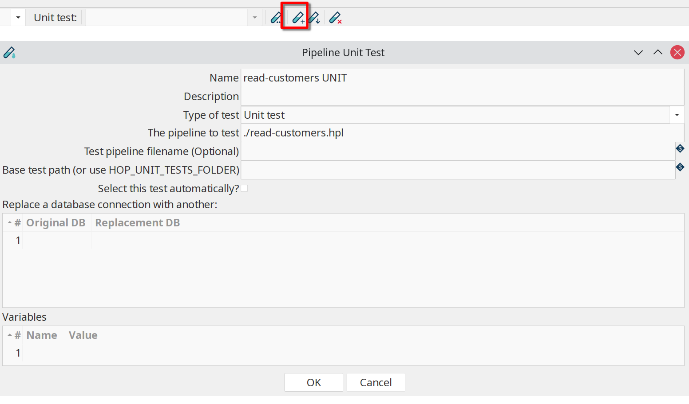
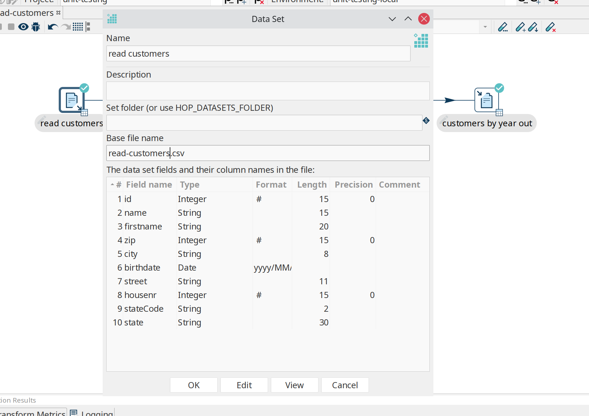
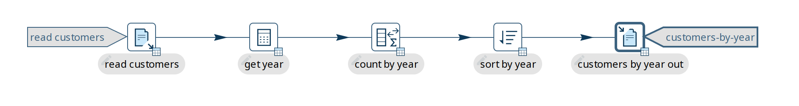
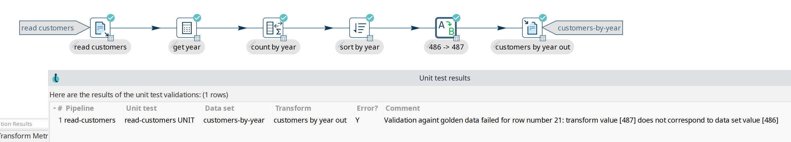
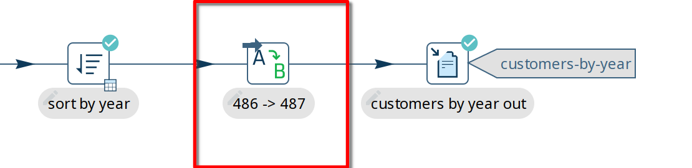
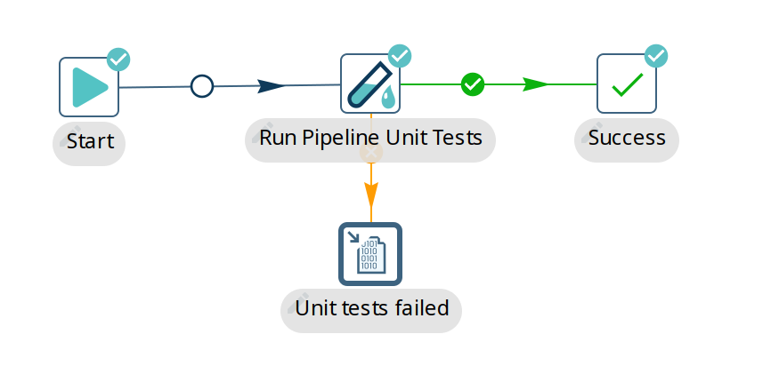
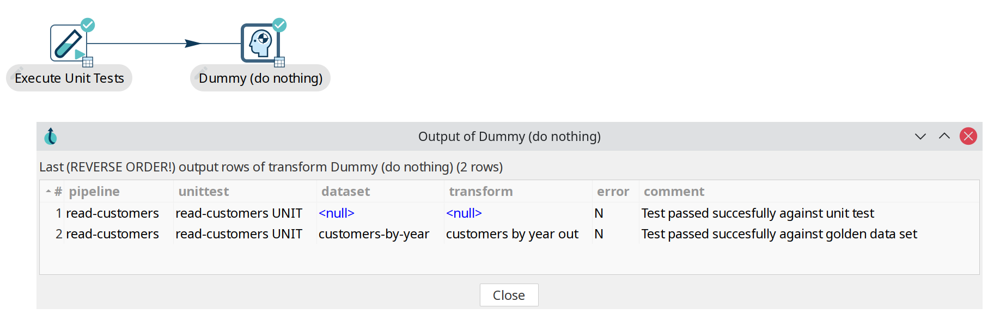

Pipeline Unit Testing
The need for unit testing
Hop pipelines manipulate data coming from a variety of data sources, reading input and producing output. Hop unit tests simulate inputs in the form of Input data sets and validates output against Golden data sets. A unit test is a combination of zero or more input sets and golden data sets along with a bunch of tweaks you can do to the pipelines prior to testing.
Hop pipelines allow Hop developers to work test-driven, but also allow to perform regression testing, to make sure that old issues that were once fixed remain fixed.
Hop unit tests can speed up development in a number of cases:
-
pipelines without design time input: mappings, single threader, …
-
when input data doesn’t exist yet, is in development, or where there is no direct access to the source system.
-
When it takes a long time to get to input data, long running queries, … Please note that you can flag a unit test to be opened and selected automatically when a pipeline is loaded in Hop Gui.
Main components of a unit test
Hop uses the following concepts (metadata objects) to work with pipeline unit tests:
-
Data set : A set of rows with a certain layout, stored in a CSV data set. When used as input we call it an input data set. When used to validate a transform’s output we call it a golden data set.
-
Unit test tweak: the ability to remove or bypass a transform during a test
-
Unit test: The combination of input data sets, golden data sets, tweaks and a pipeline.
You can have 0, 1 or more input or golden data sets defined in a unit test. You can have multiple unit tests defined per pipeline.
a default data set folder can be specified in the project dialog.
Check the 'Data Sets CSV Folder (HOP_DATASETS_FOLDER)'.
By default, the value for the ${HOP_DATASETS_FOLDER} variable is set to ${PROJECT_HOME}/datasets.
|
Unit tests in runtime
When a pipeline is executed in Hop Gui and a unit test is selected the following happens:
-
all transforms marked with an input data set are replaced with an Injector transform
-
all transforms marked with a golden data set are replaced with a dummy transform (does nothing).
-
all transforms marked with a "Bypass" tweak are replaced with a dummy.
-
all transforms marked with a "Remove" tweak are removed
These operations take place on a copy of the pipeline, in memory only unless you specify a hpl file location in the unit test dialog.
After execution, transform output is validated against golden data and logged. In case of errors in the test, a dialog will pop up when running in Hop Gui.
Create unit tests
Unit test and data set options
The 'Unit Testing' category in the transform context dialog (click on transform icon to open) contains the available unit testing options:

-
Set input data set: For the active unit test, it defines which data set to use instead of the output of the transform
-
Clear input data set: Remove a defined input data set from this transform unit test
-
Set golden data set: The input to this transform is taken and compared to the golden data set you are selecting.
-
Clear golden data set: Remove a defined input data set for this transform unit test
-
Create data set: Create an empty data set with the output fields of this transform
-
Write rows to data set: Run the current pipeline and write the data to a data set
-
Remove from test: When this unit test is run, do not include this transform
-
Include in test: Run the current pipeline and write the data to a data set
-
Bypass in test: When this unit test is run, bypass this transform (replace with a dummy)
-
Remove bypass in test: Do not bypass this transform in the current pipeline during testing
| creating data sets is also possible from the 'New' context menu or metadata perspective. |
You can also generate or regenerate a data set from a pipeline with the Data set output transform.
That is useful in automated or headless (hop-run) runs, where the canvas Write rows to data set action is not available.
Create and add data sets
Consider the following basic pipeline below. This pipeline reads data from a csv file, extracts the years from a date of birth, counts rows by this year, sorts and writes out to a file.
We’ll use this example to create a test to verify the output of the pipeline is what we expected.

Click the '+' icon (highlighted) in the unit testing toolbar to create a new unit test. Previously created unit tests will be available from the dropdown box for editing.

The options in this dialog are:
| Name | name to use for this unit test |
|---|---|
Description |
a description for this unit test |
Type of test |
'Unit test' or 'Development' |
The pipeline to test |
the pipeline this test applies to. By default, you should see the active pipeline filename here. |
Test pipeline filename (Optional) |
the filename to use for this unit test. |
Base test path (or use HOP_UNIT_TESTS_FOLDER) |
the folder to store this unit test to. |
Select this test automatically |
default: false |
Replace a database connection with another |
specify a list of database connections for this pipeline that you’d like to swap out for a test-specific connection. |
Variables |
a list of variables to use in testing. |
You’ll get a popup dialog Do you want to use this unit test for the active pipeline '<YOUR PIPELINE NAME>?'.
Since we’re creating a unit test for the active pipeline in this example, confirming is fine.
Click on the 'read customers' transform icon to open the context dialog, click 'Create data set'. The popup dialog already shows the field layout in the bottom half of the dialog. Give the data set a name and file name.

Do the same for the output transform you’ll want to check the data for ('customers by year out' in the example).
| check the metadata perspective. You should now have two data sets available. |
To write data to the newly created data sets, click the 'read customers' transform icon again, click 'Write rows to data set'. You’ll get a popup dialog asking you to select the data set, followed by a dialog where you can map transform output fields to data set fields. For this example, just click 'guess'.
Repeat for the 'customer by year out' transform and data set.
Click the 'read customers' transform icon again, select 'set input data set'. Select the data set and accept the sort order.
Repeat for 'customers by year out', but use 'Set golden data set'.
Your pipeline now has two new indicators for ths input and output data set.

Run the unit test
If the pipeline runs with all tests passed, you’ll receive a notification in the logs:
2025/04/02 21:16:43 - get year.0 - Finished processing (I=0, O=0, R=10000, W=10000, U=0, E=0)
2025/04/02 21:16:43 - count by year.0 - Finished processing (I=0, O=0, R=10000, W=22, U=0, E=0)
2025/04/02 21:16:43 - sort by year.0 - Finished processing (I=0, O=0, R=22, W=22, U=0, E=0)
2025/04/02 21:16:43 - customers by year out.0 - Finished processing (I=0, O=0, R=22, W=22, U=0, E=0)
2025/04/02 21:16:43 - read-customers - Unit test 'read-customers UNIT' passed succesfully
2025/04/02 21:16:43 - read-customers - ----------------------------------------------
2025/04/02 21:16:43 - read-customers - customers by year out - customers-by-year : Test passed succesfully against golden data set
2025/04/02 21:16:43 - read-customers - Test passed succesfully against unit test
2025/04/02 21:16:43 - read-customers - ----------------------------------------------
2025/04/02 21:16:43 - read-customers - Pipeline duration : 0.108 seconds [ 0.108 ]
2025/04/02 21:16:43 - read-customers - Execution finished on a local pipeline engine with run configuration 'local'If changes to the pipeline cause the test to fail, a popup will be shown for the failed rows.
In the example below, the number of rows for the year 1990 was changed from 486 to 487, causing the test to fail:

While successful test show 'Test passed succesfully against golden data set' and 'Test passed succesfully against unit test', failed unit tests may show one of the error messages listed below:
-
Incorrect number of rows received from transform, golden data set <GOLDEN_DATASET_NAME> has <GOLDEN_DATASET_ROWS> rows in it and we received <NB_ROWS_FOUND> -
Validation against golden data failed for row number <ROW_NUMBER>, field <FIELD_NAME>: transform value [<FIELD_VALUE>] does not correspond to data set value [<GOLDEN_DATASET_VALUE>]
Remove and bypass transforms in unit tests
While developing pipelines, you’ll often remove or disable transforms in a pipeline. We can do the same in unit tests.
In our example, we may want to remove or bypass the transform that caused the test to fail ('486 → 487').
Click on the transform icon and select either 'Bypass in Test' or 'Remove from test'.
Bypassing a transform in a test will replace the transform with a Dummy transform while executing the test.
As the name implies, 'Remove from test' will remove the transform from the test pipeline, exactly like you would remove a transform from a pipeline.
In the case of bypassing a transform, your pipeline will look like the one below ('Remove' will add a similar icon to the transform icon, crossing it out).

Automate unit test execution
Run unit tests in a workflow
There is a workflow action called "Run pipeline unit tests" which can execute all defined unit tests of a certain type. The output of the transform can be stored in any format or location with regular Hop transforms. Execute the workflow through hop-run, in a scheduler or through a CI/CD pipeline in e.g. Jenkins.
Use the 'Get test names' in this action to specify which of the available unit tests you want to include in your workflow.

In the workflow logging output, you’ll find information about the exit state of your unit tests:
2025/04/02 10:05:23 - read-customers - Unit test 'read-customers UNIT' passed succesfully
2025/04/02 10:05:23 - read-customers - ----------------------------------------------
2025/04/02 10:05:23 - read-customers - customers by year out - customers-by-year : Test passed succesfully against golden data set
2025/04/02 10:05:23 - read-customers - Test passed succesfully against unit test
2025/04/02 10:05:23 - read-customers - ----------------------------------------------
2025/04/02 10:05:23 - read-customers - Pipeline duration : 0.227 seconds [ 0.227" ]Run unit tests in a pipeline
Similar to the workflow action, there’s a transform to run your unit tests:

Examples
The Apache Hop project runs hundreds of integration tests on a daily basis to test the Apache Hop functionality. A lot of these integration tests use unit tests.
Each of the subfolders in our GitHub’s integration-tests folder is a self-contained Apache Hop project that can be added to and opened in Hop Gui (check for the project-config.json). A basic environment configuration file dev-env-config.json is available in these projects, and can be added to your project.
For example, you can add the transforms folder as a project to your local Apache Hop installation and run the available pipelines to learn more about unit testing in Apache Hop.